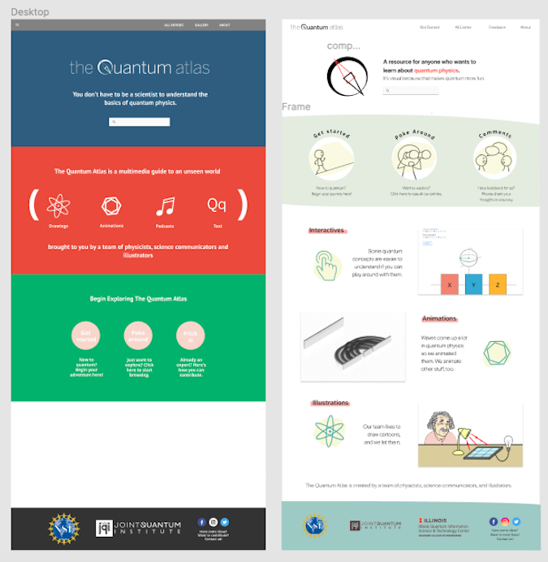

The Quantum Atlas
The Quantum Atlas is an approachable guide to quantum physics intended for non-experts. Its purpose is to enhance learning in informal environments, and broaden access and engagement in STEM learning experiences, featuring cartoons, animations, interactive elements and infographics. I redesigned the website as well as created content (animations, infographics) to supplement the entries.
Website Redesign
Before and after of our home page on Figma.
Creative Assets
I also created graphics and animations like these using After Effects and Illustrator. After conducting initial needs assessments (via focus groups), our team found out what users know (and don't know) about quantum physics and what mediums they want to learn in. We used this data to guide the development of our content.